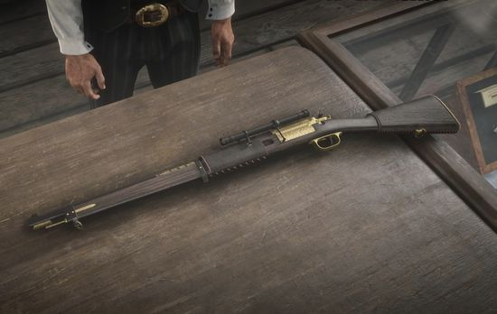
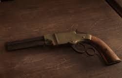

| Armas | Descrição | Preço |
|---|---|---|
| Um revólver básico, ideal para tiroteios rápidos. Ele é acessível e uma escolha comum no início do jogo. | 50.0 | |
| Um rifle versátil para médio alcance, equilibrando poder e precisão, muito utilizado para combates gerais. | 135.0 | |
| Espingarda eficaz para curtas distâncias, capaz de eliminar inimigos com um único disparo a curta distância. | 148.0 | |
|  | Focado em precisão e poder, esse rifle é ideal para tiros mais lentos, mas com alto impacto. | 120.0 |
|  | Combina as características de uma pistola e um rifle em termos de dano, mas possui uma cadência de tiro mais baixa. | 150.0 |